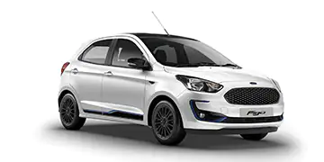

| Home | About | |
Cars | Contact |
The limited edition Mustang® 60th Anniversary Package is here. Exclusive to the 2025 Mustang® GT Premium coupe and convertible, it features the following and more: |
|---|
 |
Ford FiestaThe Ford Fiesta is in its final year after a long good run; and if you count its years in Europe before it came to the U.S., that run has been longer and better. The Fiesta is a subcompact sedan and hatchback with a choice of three engines, from perky and inexpensive, to tiny and unique, to pocket-rocket responsive. |
Ford AspireThe Ford Aspire launched in 1994 as a replacement to the Festiva, which was one of the most fuel-efficient Fords ever made. This subcompact car was a budget-friendly option to those looking for something basic. The Aspire came equipped with a small 1.3L four-cylinder engine that output 64 horsepower. While it won't raise your pulse behind the wheel, this Ford was fuel efficient, achieving up to 42 mpg on the highway. |
 |
| Contact | Address | |
| contact@ford.com | +91 9876899503 | Bhopal, [M.P.] |